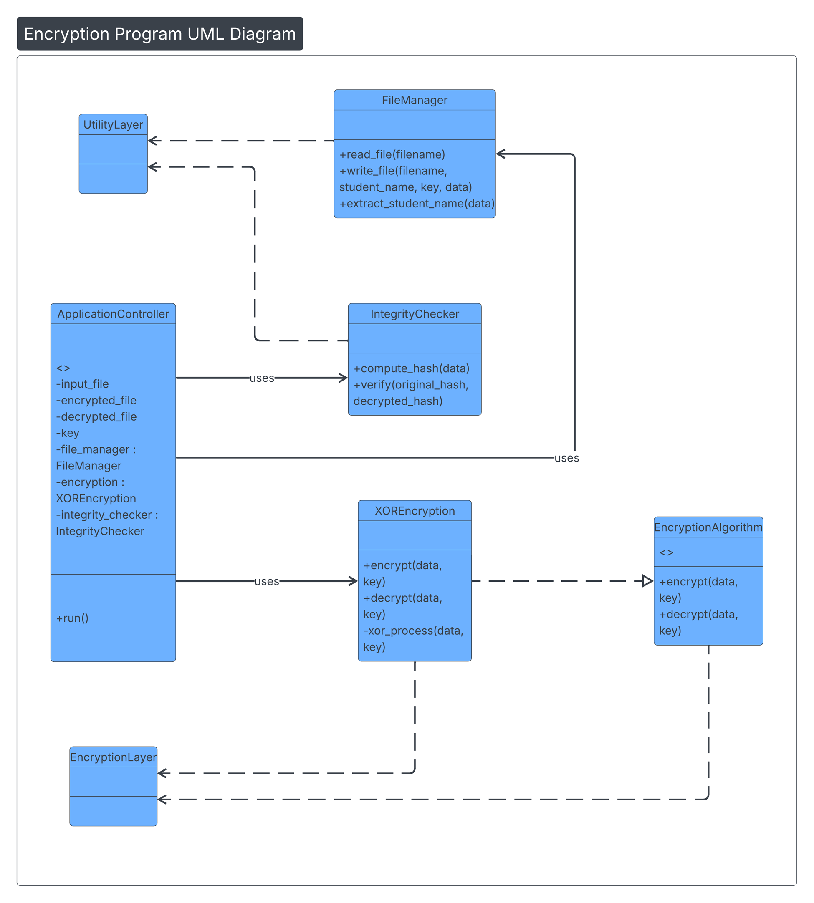
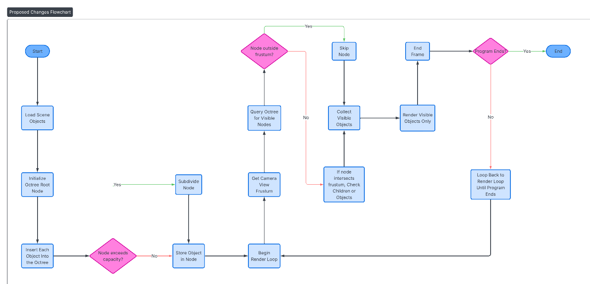
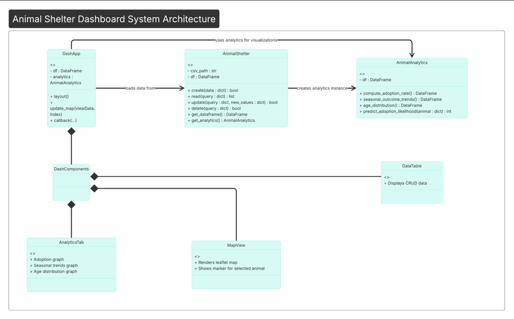
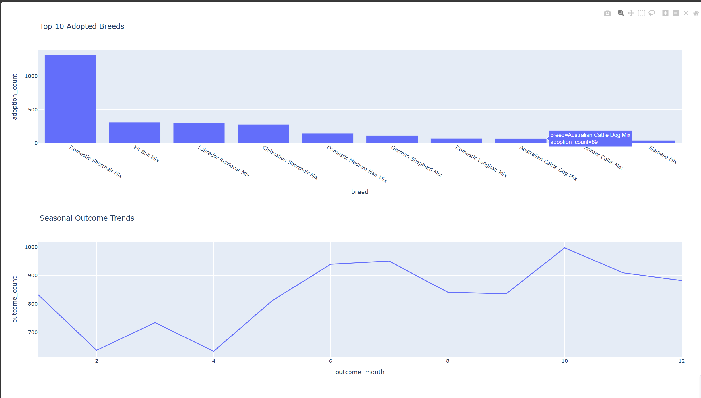

My Computer Science program and the development of this ePortfolio have shaped me into a thoughtful, capable, and security minded software engineer. The coursework built my technical foundation while teaching me how to design maintainable systems, communicate effectively, and approach problems with both creativity and discipline. Building this portfolio allowed me to demonstrate how I think as a computing professional. Throughout the program, I gained experience collaborating in environments where clear communication and version control discipline were essential for project flow. These projects taught me how to coordinate tasks, integrate code across contributors, and maintain transparency so the project could move forward efficiently. I also learned to adapt my communication style for different audiences, such as technical documentation and design proposals as explanations for non technical stakeholders. My coursework in data structures and algorithms changed the way I analyze and optimize solutions. Implementing trees, graphs, and hashing strategies helped me understand how performance and scalability influence architectural decisions. This mindset is what prompted my Octree enhancement, where hierarchical spatial partitioning replaced the inefficient linear searches of the original program. Database development further expanded my ability to design structured systems. I gained experience with schema design, SQL and NoSQL databases, backend logic, and full stack CRUD applications. These skills came together in my database enhancement, where I improved data integrity, validation, and error handling to create a more secure system. Security has been a consistent thread throughout my education. Courses in secure coding taught me to anticipate vulnerabilities, validate inputs, and design defensively. My encryption enhancement reflects this mindset, transforming a simple script into a modular, maintainable, and security focused component aligned with industry best practices. The artifacts in this portfolio demonstrate my abilities: secure software design, performance oriented data structures, and reliable database development. Each enhancement focuses on a different dimension of my skill set, yet all share a commitment to clarity, maintainability, and responsible engineering. Creating this ePortfolio helped me articulate my strengths and recognize the values that guide my work. It represents the culmination of my academic journey and the foundation for my career as a software engineer.
This video link takes you to a review of the artifacts enhanced in this project, walking through the room for growth in the original artifacts and the proposed changes to each artifact.
This code review evaluates three major artifacts from my computer science coursework, focusing on software design, algorithms, and database engineering. It begins with a C++ XOR encryption program, assessing its procedural structure, security weaknesses, and lack of modularity, followed by a plan to refactor it using object‑oriented design and integrity checking. The second section reviews a 3D OpenGL scene, identifying architectural limitations in its hard‑coded rendering pipeline and proposing an Octree data structure to improve scalability and performance. The final section analyzes a Python CRUD module for an animal shelter dataset, highlighting its minimal defensive programming and limited functionality, then outlining an enhancement that adds a full analytics layer using MongoDB aggregation.
This section presents the Software Design and Engineering enhancement. The artifact selected for this category is an encryption program originally developed in CS 405: Secure Coding. The enhancement focuses on improving software architecture, modular design, maintainability, and secure coding practices.

This UML diagram illustrates the redesigned architecture of the enhanced encryption program. It shows the separation of concerns across components such as the application controller, file manager, encryption layer, and integrity checker.
For the Software Design and Engineering category, I selected my encryption program from CS 405: Secure Coding. The original version successfully implemented a basic encryption routine, but its structure was tightly coupled, lacked modularity, and offered limited flexibility for future expansion. The enhancement process focused on transforming this small, functional script into a maintainable, extensible, and professionally structured software component.
The enhanced version introduces a clearer architectural design by separating responsibilities into distinct modules, improving readability, and supporting long‑term maintainability. I refactored the program to follow object‑oriented principles, introduced error handling, and strengthened input validation to align with secure coding standards. These changes not only improved the program’s internal organization but also made the code easier to test, extend, and integrate into larger systems.
This enhancement demonstrates my ability to apply software engineering principles such as modular design, abstraction, and architectural restructuring. It also reflects a security‑aware mindset, so the program handles data safely and avoids common vulnerabilities. By revisiting and redesigning this artifact, I showcased my growth in designing computing solutions that balance clarity, maintainability, and security expectations of the Software Design and Engineering outcome.
This section presents the Algorithms & Data Structures enhancement with my 3D Graphics Scene project. The artifact selected for this category is the Octree spatial‑partitioning system originally developed during CS 330: Computer Graphics and Visualization and later expanded in CS 499. The enhancement focuses on improving architectural design, performance efficiency, modularity, and the integration of advanced data structures into a real‑time rendering environment.
For this enhancement, I implemented an Octree algorithm to manage objects within my 3D graphics scene. The original implementation relied on a flat list of scene objects, which required iterating over every object for operations such as collision detection, selection, and spatial queries. This approach worked for small scenes but became inefficient and difficult to scale as complexity increased.
The enhanced version introduces a fully modular Octree architecture designed to partition 3D space recursively and organize objects based on their positions. I refactored the system into clear, reusable components, separating responsibilities such as node management, object insertion, spatial querying, and debug visualization. This redesign improves maintainability and makes the system easier to extend. For example, adding frustum culling, dynamic resizing, or physics‑based interactions are now much more efficient.
Performance was a major focus of this enhancement. By replacing linear searches with hierarchical spatial queries, the Octree significantly reduces the number of objects evaluated during collision checks and selection operations. This optimization results in smoother interaction, more efficient rendering, and a scalable foundation for future scene complexity. I also strengthened error handling, added boundary validation, and built object insertion and subdivision logic that adhered to secure and predictable coding practices.
This enhancement demonstrates my ability to integrate advanced data structures into a graphics pipeline, apply architectural restructuring, and design maintainable, performance‑oriented software components. By revisiting and elevating this artifact, I showcased my growth in designing computing solutions that balance efficiency and extensibility.

This flowchart provides a visual overview of the enhanced Octree system used in the 3D graphics scene. It shows how objects are inserted, how nodes subdivide when capacity is exceeded, and how frustum culling is used to efficiently determine which objects should be rendered.
This section presents the Databases enhancement completed for CS 499. The artifact selected for this category is the Animal Shelter Analytics project originally developed in CS 340: Client/Server Development. The enhancement focuses on improving data validation, schema design, backend logic, and secure database interaction while strengthening maintainability and error handling.


The original database implementation provided basic CRUD functionality but lacked strong validation, error handling, or structural clarity. The enhancement focused on improving data integrity, strengthening backend logic, and aligning the system with secure database development practices.
I redesigned the schema to better reflect real‑world relationships, adding comprehensive input validation, and implementing structured error handling to prevent malformed queries and inconsistent data states. The enhanced version also includes a more intuitive analytics dashboard (pictured above) that provides meaningful insights into adoption trends, animal intake, and shelter operations.
This enhancement demonstrates my ability to design reliable database systems, apply secure coding practices, and create maintainable backend logic that supports real‑world data workflows. It shows my ability to integrate visual analytics to support organizational decision‑making.